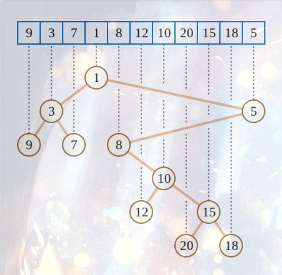

O(n)-O(1)四毛子RMQ
前言
你知道我这个算法在哪里学的吗？
在CSP2021-S 初赛上学的，太TM的离谱了。
这里大概讲一下算法，实现细节看代码，有些细节我可能会在代码后讲，代码之前的讲解只是让你大致的了解一下这个算法而已，因此有点简略，见谅，不过也不难理解，看代码应该也能懂。
前置知识：
笛卡尔树（本文会略微教一点基础的，但是有了解总是是好的）
算法描述
$n$ 个数字， $m$ 个查询，查询为 $[l,r]$ 的最大值，即 $RMQ$ 问题，可以在线，但不支持修改，这个黑科技的复杂度是 $O(n+m)$ 的。
做法
利用笛卡尔树将RMQ转成LCA问题
首先我们得了解笛卡尔树是个什么东西，这里不展开讲，就将概念，笛卡尔树是个二叉堆，由于这里求最大值，所以设定为大根，同时这颗树也是按下表为 $key$ 的平衡树，即中序遍历为原数组，根据数组，我们可以 $O(n)$ 建出树。

（图片侵权会在通知后自删，为找到出处）
当然，上面的是小根堆的例子，换成大根堆就是我们这次要用的。
不难发现，求 $[l,r]$ 的 $RMQ$ 问题变成了 $LCA$ 问题了，只要求到 $l,r$ 在树上的 $LCA$ ，然后将 $LCA$ 的值输出即可，具体为什么就不再细讲了。
LCA转01RMQ
也许有人会问，01RMQ是什么，其实就是 $RMQ$ 中相邻两个位置的值的差值的绝对值固定为 $1$ ，就叫01RMQ，因此，我们可以把 $LCA$ 转换成以 $dep$ 为关键字，以欧拉环游序为数组的01RMQ问题了（当然，这里的01RMQ是求区间最小值了）。
（在 $CSP2021S$ 初赛中的算法讲解中使用的是欧拉环游序，当然我觉得DFS序也不是不行，应该可以，没有实际打过代码试验过）
DFS序：在DFS到一个点时，将这个点加入数组中。
欧拉换有序：在DFS到一个点以及在其访问完一个儿子回溯后，都将这个点加入数组中。
当然，具体哪个是否可行，其实都不重要，重要的是下面这个。其实上面讲了这么多在初赛两句话概括过去了，当然，懂的自然都懂
O(n) 01RMQ
这个算法最精彩的无异于01RMQ的处理了，十分的优秀。
采用的方法是分块（看完后也许你就会感叹分块的魅力了），块长选择 $t=\left \lceil \frac{\log{n}}{2} \right \rceil$ 。
然后分块，首先块内的最大值先处理一下，时间复杂度是 $O(n)$ ，然后块与块之间用 $ST$ 表解决，时间复杂度： $\frac{n}{t}*\log{\frac{n}{t}}≤2n$。
然后就是块内的处理了，由于左右值最多差 $1$ 或者 $-1$ ，即差分数组可以视作一个 $01$ 串，再加上块长不大，那么直接暴力枚举差分数组即可。这里需要注意一个事情，我们这里暴力枚举不用每个块都枚举一遍，只需要暴力枚举 $2^{t-1}$ 种情况即可，然后跑出每个块对应的二进制即可。
初赛时代码的复杂度是：$2^{t-1}t≤\sqrt{n}\log{n}≤n$，但是我比较疑惑的是二进制枚举部分采用 $DFS$ 可以到达 $2^{t-1}$ 的复杂度，那么这样是不是块长可以直接采取 $\left \lceil \log{n} \right \rceil$ 。（当然，没具体实现过，口胡一下）
当然，我这里认为 RMQ 只要相邻两个位置的值是两个固定的数（即二进制），那么就可以采取这种 01RMQ 的做法。
这里，就讲完了这个算法。
时间复杂度：$O(n+m)$
空间复杂度：$O(n)$
代码
CSP-S 代码
待补
代码细节
待补
作者的代码
待补